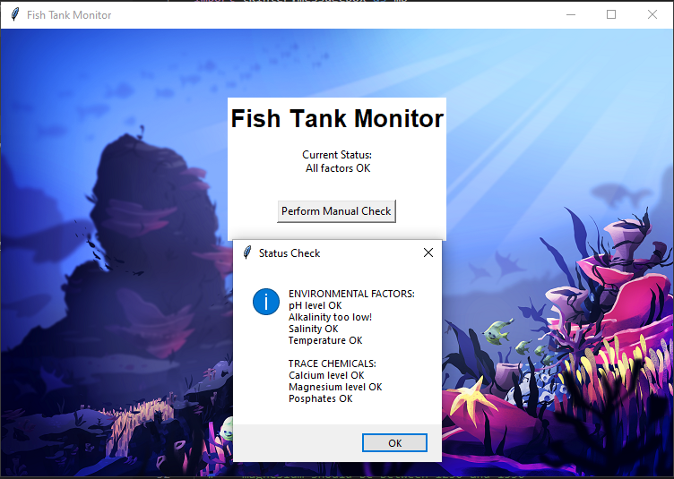
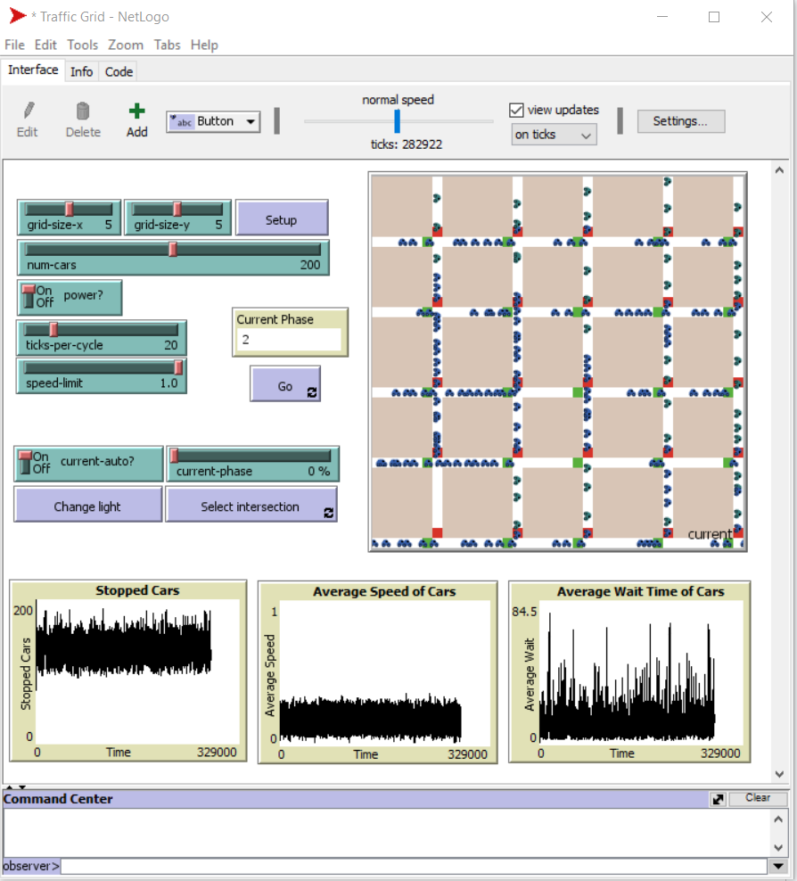
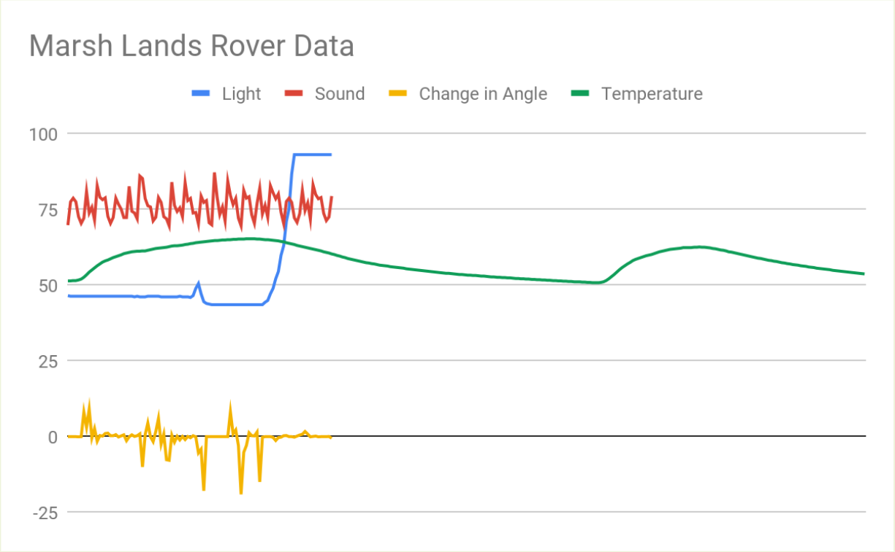
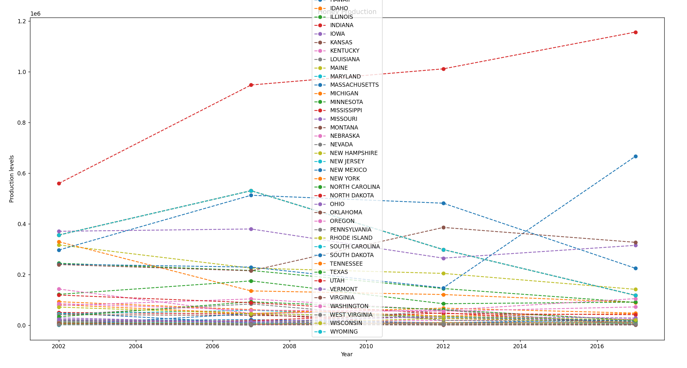

Portfolio
Home
Portfolio
About Me
This is my Portfolio Page!

Project #1

This is a roller coaster design simulator, in which the user can select the general design, color, and intensity.
We utilized a variety of shapes and colors, variations in size, movement code, and iternation & loops.
Project #2

This is a Snakes & Ladders game, in which the two users can compete to see who gets the fastes time.
In this project, we utilized iternation & loops, lists, code statements, and manipulated strings.
Project #3

This is a Mario parkour game, in which the user can move the Mario sprite around the screen while avoiding the Goomba sprites.
We utilized procedures, animations, counter, and events to include a socre and timer for this game.
Project #4

This is a fish tank program that monitors alkalinity, pH, salinity, temperature, calcium, magnesium, and phosphate levels.
There were problems with the alkalinity, temperature, and magnesium levels. We fixed these errors in the code in order to make the program execute properly.
Project #5

This is a program that simulates traffic in a city grid format.
The simulation represents a simplifed city grid with moving cars; however, the turtle vehicles and stop lights are all uniform.
Project #6

This is a chart. It shows the change in light, sound, angle, and temperature.
I determined that the rover was collecting data in the Marsh Lands based on the shape and location of the graph.
Project #7

This is a graph mapping the prodfuction of honey.
The honey production is stable and continuous, which shows that many of the honey and pee production per state is regulated.

Interactive Fiction Rags to Riches.

Modified bits in pictures.

Use data files to create graphs.

Using netlogo do remix of illusions.